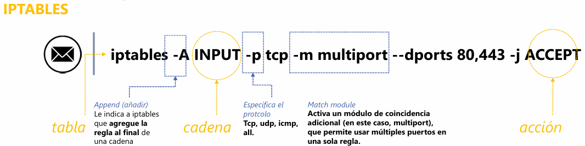

ACTIVIDAD 03 - Interpretación y traducción de políticas de filtrado en iptables
Carlos René Castillo Olvera – 182033Materia: Seguridad Informática (CNO V)
Fecha: 03/02/2026
Docente: Adolfo M.
Resumen de IPTables
1. Concepto general
Cuando un paquete entra o sale de un sistema, el kernel lo procesa mediante tablas y cadenas, donde se aplican reglas que definen qué hacer con el paquete.
- Tabla (Table): conjunto de reglas con un propósito específico.
- Cadena (Chain): secuencia de reglas dentro de una tabla.
- Regla / Acción (Rule / Action): condición a evaluar y acción a ejecutar si se cumple.
2. Tablas principales y sus usos
| Tabla | Propósito | Ejemplo de uso |
|---|---|---|
| FILTER | Filtrado de paquetes (firewall principal) | Permitir o bloquear tráfico |
| NAT | Traducción de direcciones (Network Address Translation) | NAT o port forwarding |
| MANGLE | Modificación avanzada de paquetes (QoS, TTL) | Cambiar cabeceras de paquetes |
| RAW | Excepciones al seguimiento de conexiones | Paquetes que no deben ser inspeccionados |
| SECURITY | Aplicar etiquetas de seguridad (SELinux) | Contextos de seguridad adicionales |
3. Cadenas comunes y su función
| Cadena (Chain) | Función |
|---|---|
| INPUT | Paquetes destinados al host local |
| OUTPUT | Paquetes generados por el host |
| FORWARD | Paquetes que atraviesan el host (rutado) |
| PREROUTING | Modificaciones antes de rutear (usado en NAT) |
| POSTROUTING | Modificaciones después del ruteo (usado en NAT) |
4. Acciones de las reglas (Targets / Policies)
| Acción (Target) | Descripción |
|---|---|
| ACCEPT | Permitir el paquete |
| DROP | Desechar el paquete sin responder |
| REJECT | Bloquear y enviar mensaje ICMP de rechazo |
| LOG | Registrar en /var/log/messages o syslog |
| DNAT | Redirigir la IP de destino (usado en NAT) |
| SNAT / MASQUERADE | Modificar IP de origen (salida a Internet) |

Flujo del paquete
Cuando un paquete llega al sistema, primero pasa por una tabla,
después por una cadena,
y finalmente se ejecuta una regla/acción (target).
Relación de la tabla con su propósito principal
| Tabla | Propósito principal | Ejemplo de uso (1 palabra o frase corta) |
|---|---|---|
| FILTER | Filtrado de paquetes | Permitir o bloquear tráfico |
| NAT | Traducción de direcciones | NAT o Port Forwarding |
| MANGLE | Modificación avanzada de paquetes | Cambiar cabeceras |
| RAW | Excepciones al seguimiento de conexiones | Paquetes no inspeccionados |
| SECURITY | Aplicar etiquetas de seguridad | Contextos adicionales (SELinux) |
Anatomía de un comando iptables
Comando:
iptables -A INPUT -p tcp -m multiport --dports 80,443 -j ACCEPT
Este comando permite:
Permite tráfico TCP hacia los puertos 80 (HTTP) y 443 (HTTPS).
Variables y opciones comunes
a) Limitar intentos por minuto:
-m limit --limit 5/minuteb) Filtrar por IP de origen:
-s 192.168.1.10c) Ver solo números (sin resolución DNS ni puertos):
iptables -L -nd) Ver reglas con contadores (paquetes y bytes):
iptables -L -v¿Qué hace esta regla?
iptables -A INPUT -i eth0 -p tcp -m multiport --dports 22,80,443 \
-m state --state NEW,ESTABLISHED -j ACCEPT
Explicación:
- Permite tráfico TCP entrante
- A través de la interfaz eth0
- Hacia los puertos:
- 22 (SSH)
- 80 (HTTP)
- 443 (HTTPS)
- Solo si la conexión es:
- NUEVA (NEW)
- O ya establecida (ESTABLISHED)
Permitir tráfico HTTP entrante
iptables -A INPUT -p tcp --dport 80 -m state --state NEW,ESTABLISHED -j ACCEPT
Permitir todo el tráfico saliente
iptables -A OUTPUT -j ACCEPT
Permitir SSH solo desde la IP 192.168.1.50
iptables -A INPUT -p tcp -s 192.168.1.50 --dport 22 -m state --state NEW,ESTABLISHED -j ACCEPT
Permitir tráfico TCP entrante a puertos 80 y 443 solo si es conexión establecida o relacionada
iptables -A INPUT -p tcp -m multiport --dports 80,443 \
-m state --state ESTABLISHED,RELATED -j ACCEPT
Permitir tráfico TCP entrante por eth0 a 22, 80 y 443, registrar intentos y permitir solo NEW y ESTABLISHED
iptables -A INPUT -i eth0 -p tcp -m multiport --dports 22,80,443 \
-m state --state NEW,ESTABLISHED -j LOG --log-prefix "Intento de conexión: "
iptables -A INPUT -i eth0 -p tcp -m multiport --dports 22,80,443 \
-m state --state NEW,ESTABLISHED -j ACCEPT
Explicación:
- Primero registra el intento en los logs.
- Después permite la conexión si cumple las condiciones.